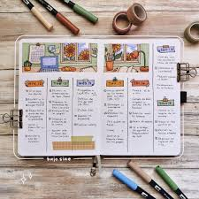
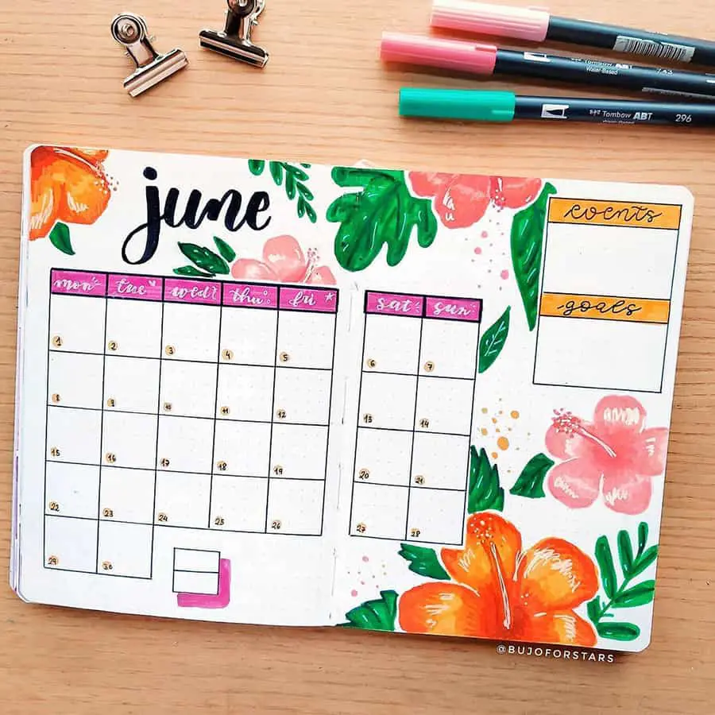
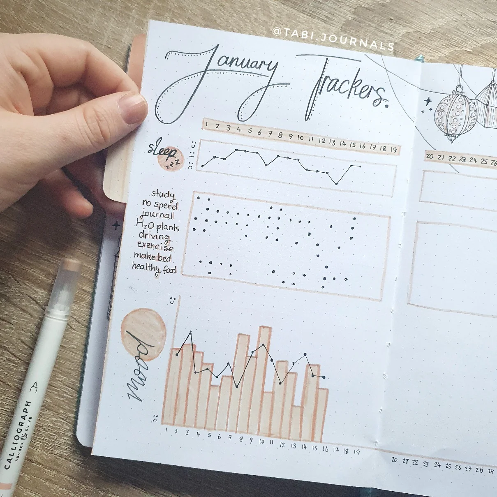

Ideas & Inspiration
Unleash your creativity and stay organized with tips, inspiration, and tools for bullet journaling success
Themed Layout Ideas
Here are some creative ideas to inspire your next journal spread:
- Seasonal spreads like autumn leaves or winter snowflakes.
- Habit trackers for fitness, water intake, or sleep.
- Creative gratitude logs or memory-keeping spreads.
Inspiration Gallery



Step-by-Step Tutorials
Follow these steps to design a colorful mood tracker:
- Draw a simple shape (e.g., a circle or a grid).
- Divide it into sections representing each day of the month.
- Assign a color code to each mood.
- Fill in the sections daily with the corresponding color.
"Writing in a journal gives me a place to report, interpret, argue, reflect, save, question, predict, unload, praise, compare, cry, laugh, draw, paint, and remember."